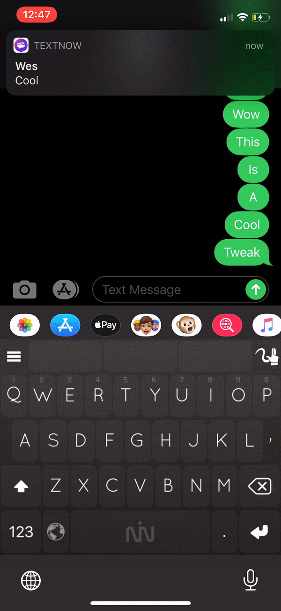
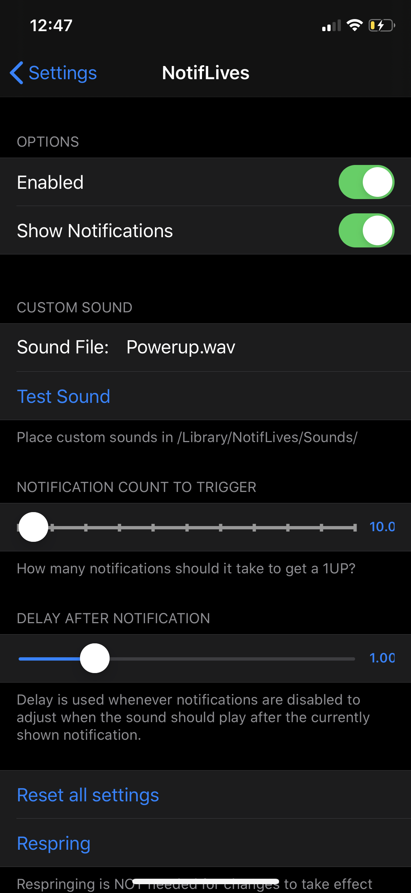

Compatibility
- Made for iOS 13
Description
-
This tweak will let you get 1UPs from notifications! Set how many notifications it takes to trigger it, and you'll get a life and sound effect when you get enough. There's optional notifications that will pop up to show how many lives you currently have.
You can also set a custom sound effect to be played! I've found that a good way of setting it up is to email yourself a sound and open it with Filza. You can then easily move it to /Library/NotifLives/Sounds/. Then just change the Sound File in settings and test out your new sound!
screenshots

changelog
-
1.1.2
- Made preferences slightly fancier
-
1.1.1
- Added option to set what apps should count towards "coin" count
-
1.1.0
- Added option to save "coin" count between resprings
- Added additional reset options
-
1.0.1
- Fixed preferences for arm64e
-
1.0.0
- Initial Release